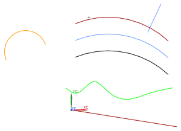
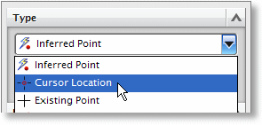

通过光标位置创建点
-
打开 ffm3_points_1，并开始建模应用模块(如果它还没有被激活)。

-
在特征工具条的基准/点下拉菜单中，点击点
 。
。 -
在点对话框的类型列表中，选择光标位置。

当您使用光标位置选项时，光标将发生变化并且不再带有选择球。

-
在图形窗口中，点击任意位置以创建点，然后点击应用。
当您执行上述操作时，注意坐标系的位置，因为点将被投影到XC-YC平面上。
点会显示为 一个小的加号(+)。(在当前位置可能也会出现下一个点的球形预览。)
提示
您也可以使用自动判断的点选项在图形区域中没有几何体存在的位置创建一个近似的点。
点的坐标值显示在点对话框的输出坐标组中。